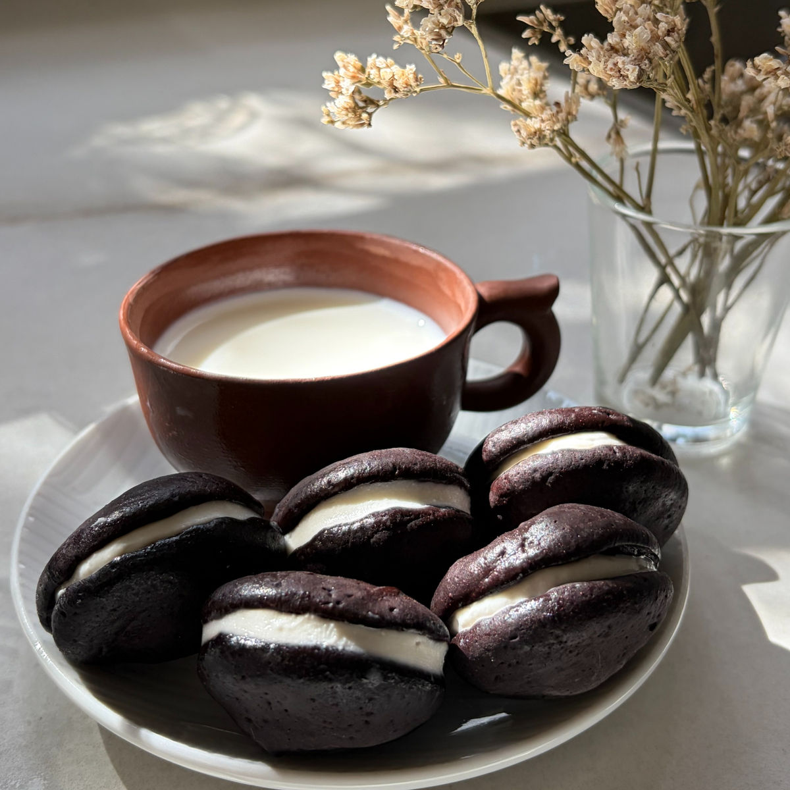
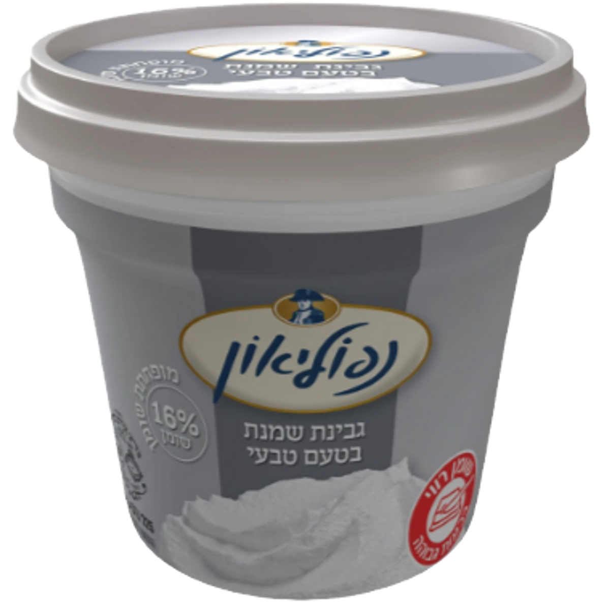
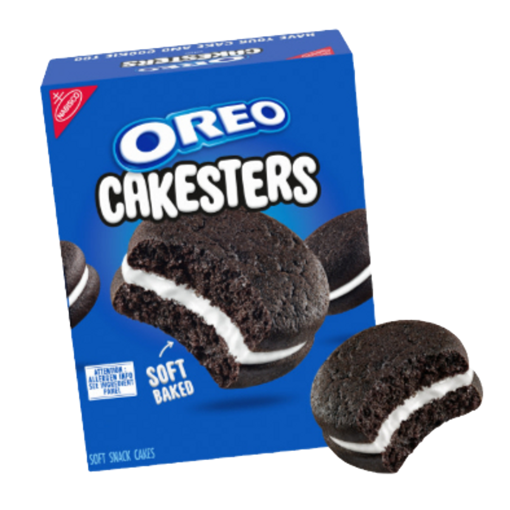

מיני עוגיות אוראו דלות בקלוריות
טבלת ערכים תזונתיים בקירוב :
טבלה זו היא עבור מתכון עם סוויטאנגו, גבינת שמנת 180 קלוריות ל100 גרם, אבקת קקאו עם 14 גרם פחמימה ו250 קלוריות ל100 גרם
| ערכים | עוגיה (15 גרם ) | 100 גרם |
|---|---|---|
| קלוריות | 26 | 175.5 |
| פחמימות | 0.8 | 5.5 |
| חלבונים | 2.25 | 15 |
וואו, איזה מתכון מאתגר זה היה!
בכללי, לפתח מתכון לעוגיות שהן גם דלות בקלוריות וגם מבוססות על רכיבים טובים ונקיים זה אתגר לא פשוט, ועוגיות אוראו בריאות? זה מורכב אפילו יותר! האמת היא שאם זה לא היה בשבילכם, כנראה שהייתי מתייאשת מזמן. לפני שהתחלתי, סרקתי את כל האינטרנט כדי לחפש השראה, אבל גיליתי שכל המתכונים הקיימים מבוססים בעיקר על כמויות של חמאה, שמן ואבקת סוכר. לא היה לי שום בסיס לעבוד איתו.
עבדתי על המתכון הזה המון זמן. בכל פעם משהו אחר לא ישב לי בול – לפעמים זה היה המילוי ולפעמים המרקם של העוגייה. היו לא מעט רגעים שבהם חשבתי להרים ידיים, לשנות כיוון לחלוטין וללכת על הגרסה הקלה: להפוך אותן לעוגיות קיטו עשירות בשומן ולוותר על הניסיון לשמור על ערכים דלי קלוריות. אבל לא הסכמתי לוותר. ניסיתי שוב, ושוב, ושוב... עד שזה פשוט הצליח!
בסופו של דבר, הציפייה, ההתרגשות והתמיכה שלכם הן אלו שהחזיקו אותי ונתנו לי את הכוח להמשיך לנסות, עד שהגעתי לתוצאה המושלמת שאני כל כך גאה להוציא לאור. אז יאללה, רוצו להכין ותהנו!

מתכון:
כמות: 12 עוגיות
מרכיבים:
לעוגיות:
45 גרם קקאו / 48 גרם אם משתמשים בדבש כממתיק
26 גרם אבקת סוכר סוויטאנגו / 30 גרם דבש (שימו לב: דבש אינו מתאים לסוכרתיים ולקיטוגנים)
3 חלבונים ביצה L
למילוי:
50 גרם גבינת שמנת 16%
9 גרם חמאת שקדים
9 גרם אבקת סוכר סוויטאנגו / 10 גרם דבש
הוראות הכנה:
עוגיות:
חממו מראש את התנור ל-160 מעלות בתוכנית טורבו, ורפדו תבנית תנור בנייר אפייה.
נפו אל תוך קערה את אבקת הקקאו. (אל תוותרו על השלב הזה, קריטי כדי שתצא לכם בלילה חלקה ויציבה).
גרסת הסוויטאנגו: נפו את אבקת הסוויטאנגו יחד עם הקקאו.
לגרסת הדבש: בקערה נפרדת, טורפים היטב את הדבש יחד עם חלבוני הביצה עד לקבלת תערובת אחידה.
איחוד החומרים: הוסיפו את חלבוני הביצה (או תערובת הדבש) אל אבקת הקקאו המנופה בצורה הדרגתית (כשליש כל פעימה). ערבבו בין הוספה להוספה, ובסוף ערבבו היטב עד לקבלת תערובת חלקה ללא גושים.
שימו לב, אם התערובת מרגישה לכם נוזלית מדי ולא יציבה מספיק לזילוף, הוסיפו עוד כ-2-3 גרם של אבקת קקאו מנופה וערבבו שנית.
העבירו את הבלילה לשקית זילוף. זלפו עיגולים שטוחים יחסית על גבי נייר האפייה. השתדלו לשמור על גודל אחיד ככל הניתן כדי שהעוגיות ייאפו בצורה שווה. אני עשיתי עיגולים בגודל של כ3.5 ס"מ יצאו לי כ24 עוגיות.
הכניסו את התבנית לחלקו התחתון של התנור ואפו למשך כ-20 דקות.
הוציאו מהתנור וצננו את העוגיות לחלוטין (לפחות 45 דקות). שלב זה קריטי – הצינון המלא הוא זה שמעניק לעוגיות את המרקם הפריך והמדויק שלהן.
מילוי:
בזמן שהעוגיות בתנור, זה הזמן המושלם להכין את המילוי. ערבבו בקערה את כל רכיבי המילוי עד לקבלת קרם אחיד.
העבירו את המילוי למקרר למשך 20 דקות לפחות. שלב זה אינו חובה, אך הוא מומלץ מאוד כדי להביא את המילוי למרקם היציב והמוכר של עוגיות אוראו קלאסיות.
הרכבה:
לפני שמתחילים במילוי, מומלץ למיין את העוגיות ולחלק אותן לזוגות הדומים ככל הניתן בגודלם ובצורתם. כך תקבלו תוצאה אסתטית ומושלמת.
קחו עוגייה אחת מכל זוג, והפכו אותה כך שהצד השטוח פונה כלפי מעלה. זלפו את הקרם בעזרת שקית זילוף על החלק השטוח (אם אין לכם שקית זילוף, גם כפית תעשה את העבודה מצוין).
הניחו את העוגייה השנייה מעל המילוי, כאשר גם הצד השטוח שלה פונה כלפי פנים, והדקו בעדינות.
הערות:
אם אתם עוקבים בצורה הדוקה אחר כמות הקלוריות, אפשר עקרונית להשתמש בגבינה במרקם שמנת 5%. יחד עם זאת, בחרתי שלא לשלב אותה במתכון המקורי כיוון שרשימת הרכיבים שלה כוללת לרוב עמילנים ומייצבים, ואני תמיד מעדיפה רשימת רכיבים נקייה ואיכותית על פני חיסכון בקלוריות.
אני ממליצה בחום להשתמש בגבינת השמנת של "נפוליאון" (16% שומן, כ-180 קלוריות ל-100 גרם). יש לה את רשימת הרכיבים הקצרה והנקייה ביותר שנתקלתי בה מבין גבינות השמנת הזמינות בסופרים (תמונה בתחתית המתכון).
אתם יותר ממוזמנים לטעום את המילוי תוך כדי תנועה ולשחק מעט עם היחסים בין חמאת השקדים, הממתיק וגבינת השמנת. הגרסה שלי בכוונה אינה מתוקה מדי, ומצאתי שדווקא חמאת השקדים היא זו שנותנת את הקיק ומביאה את המילוי לטעם שכל כך מזכיר את האוראו המקורית.
תמונות עזר:

גבינת השמנת בה השתמשתי

אחת העקבות אמרה שיצא לי דומה לגרסה הזו של העוגיות ואני לגמרי מסכימה איתה